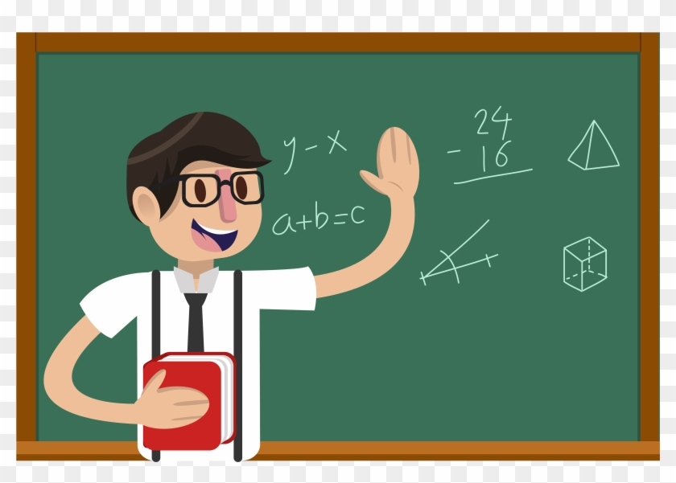

11th Class Students
Solve problems in Maths and Physics.Once you start solving these problems, you would be getting an idea when you see a different question.
MATHS
Chapter 2: Relations and Functions
Chapter 3: Trignometric Functions
Chapter 4: Principle of Mathematical Induction
Chapter 5: Complex Numbers and Quadratic Equations
Chapter 6: Linear Inequalities
Chapter 7: Permutations and Combinations
Chapter 9: Sequences and Series
Chapter 12: Introduction to Three Dimensional Geometry
Chapter 13: Limits and Derivatives